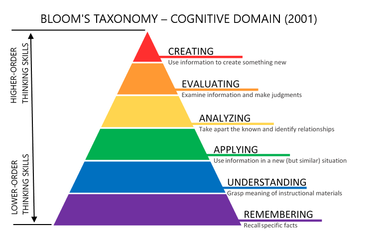

About the Book
Overview
This section provides essential background about the book’s purpose, development context, and what readers can expect from their learning journey.
Purpose of the Book
The goal of this book is to provide a resource for educators and learners seeking to understand the principles and practices of machine learning systems. This book is continually updated to incorporate the latest insights and effective teaching strategies with the intent that it remains a valuable resource in this fast-evolving field. So please check back often!
Context and Development
The book originated as a collaborative effort with contributions from students, researchers, and practitioners. While maintaining its academic rigor and real-world applicability, it continues to evolve through regular updates and careful curation to reflect the latest developments in machine learning systems.
What to Expect
This textbook follows a carefully designed pedagogical progression that mirrors how expert ML systems engineers actually develop their skills. The learning journey unfolds in five distinct phases:
Phase 1: Theory - Build your conceptual foundation through Foundations and Design Principles, establishing the mental models that underpin all effective systems work.
Phase 2: Performance - Master Performance Engineering to transform theoretical understanding into systems that run efficiently in resource-constrained real-world environments.
Phase 3: Practice - Navigate Robust Deployment challenges, learning how to make systems work reliably beyond the controlled environment of development.
Phase 4: Ethics - Explore Trustworthy Systems to ensure your systems serve society beneficially and sustainably.
Phase 5: Vision - Look toward ML Systems Frontiers to understand emerging paradigms and prepare for the next generation of challenges.
Comprehensive laboratory exercises are strategically positioned after the core theoretical foundation, allowing you to apply concepts with hands-on experience across multiple embedded platforms. Throughout the book, quizzes provide quick self-checks to reinforce understanding at key learning milestones.
Learning Goals
This section outlines the educational framework guiding the book’s design and the specific learning objectives readers will achieve.
Key Learning Outcomes
This book is structured with Bloom’s Taxonomy in mind (Figure fig-bloom), which defines six levels of learning, ranging from foundational knowledge to advanced creative thinking:

Remembering: Recalling basic facts and concepts.
Understanding: Explaining ideas or processes.
Applying: Using knowledge in new situations.
Analyzing: Breaking down information into components.
Evaluating: Making judgments based on criteria and standards.
Creating: Producing original work or solutions.
Learning Objectives
This book supports readers in developing practical expertise across the ML systems lifecycle:
Systems Thinking: Understand how ML systems differ from traditional software and reason about hardware-software interactions.
Workflow Engineering: Design end-to-end ML pipelines, from data engineering through deployment and maintenance.
Performance Optimization: Apply systematic approaches to make systems faster, smaller, and more resource-efficient.
Production Deployment: Address real-world challenges including reliability, security, privacy, and scalability.
Responsible Development: Navigate ethical implications and implement sustainable, socially beneficial AI systems.
Future-Ready Skills: Develop judgment to evaluate emerging technologies and adapt to evolving paradigms.
Hands-On Implementation: Gain practical experience across diverse embedded platforms and resource constraints.
Self-Directed Learning: Use integrated assessments and interactive tools to track progress and deepen understanding.
AI Learning Companion
Throughout this resource, you’ll find SocratiQ—an AI learning assistant designed to enhance your learning experience. Inspired by the Socratic method of teaching, SocratiQ combines interactive quizzes, personalized assistance, and real-time feedback to help you reinforce your understanding and create new connections. As part of our experiment with Generative AI technologies, SocratiQ encourages critical thinking and active engagement with the material.
SocratiQ is still a work in progress, and we welcome your feedback to make it better. For more details about how SocratiQ works and how to get the most out of it, visit the AI Learning Companion page.
How to Use This Book
Book Structure
This book takes you from understanding ML systems conceptually to building and deploying them in practice. Each part develops specific capabilities:
Core Content:
Foundations Master the fundamentals. Build intuition for how ML systems differ from traditional software, understand the hardware-software stack, and gain fluency with essential architectures and mathematical foundations.
Design Principles Engineer complete workflows. Learn to design end-to-end ML pipelines, manage complex data engineering challenges, select appropriate frameworks, and orchestrate training at scale.
Performance Engineering Optimize for real constraints. Develop skills to make systems faster, smaller, and more efficient through model optimization, hardware acceleration, and systematic performance analysis.
Robust Deployment Build production-ready systems. Address the challenges that make or break real deployments: operational reliability, security vulnerabilities, privacy requirements, and system maintenance.
Trustworthy Systems Design responsibly. Navigate the social and environmental implications of ML systems, implement responsible AI practices, and create technology that serves the public good.
Frontiers of ML Systems Prepare for what’s next. Understand emerging paradigms, anticipate future challenges, and develop the judgment to evaluate new technologies as they emerge.
Hands-On Learning:
- Laboratory Exercises Implement everything you learn. Progress from microcontroller-based systems to edge computing platforms, experiencing the full spectrum of resource constraints and optimization challenges in embedded ML.
Suggested Reading Paths
Beginners: Start with Foundations to build conceptual understanding, then progress through Design Principles and select relevant lab exercises for hands-on experience.
Practitioners: Focus on Design Principles, Performance Engineering, and Robust Deployment for practical system design insights, complemented by platform-specific lab exercises.
Researchers: Explore Performance Engineering, Trustworthy Systems, and ML Systems Frontiers for advanced topics, along with comparative analysis from the shared tools lab section.
Hands-On Learners: Combine any core content parts with the comprehensive laboratory exercises across Arduino, Seeed, Grove Vision, and Raspberry Pi platforms for practical implementation experience.
Modular Design
The book is designed for flexible learning, allowing readers to explore chapters independently or follow suggested sequences. Each chapter integrates:
- Interactive quizzes for self-assessment and knowledge reinforcement
- Practical exercises connecting theory to implementation
- Laboratory experiences providing hands-on platform-specific learning
We embrace an iterative approach to content development—sharing valuable insights as they become available rather than waiting for perfection. Your feedback helps us continuously improve and refine this resource.
We also build upon the excellent work of experts in the field, fostering a collaborative learning ecosystem where knowledge is shared, extended, and collectively advanced.
Transparency and Collaboration
This book began as a community-driven project shaped by the collective efforts of students in CS249r, colleagues at Harvard and beyond, and the broader ML systems community. Its content has evolved through open collaboration, thoughtful feedback, and modern editing tools—including both rule-based scripts and generative AI technologies. In a fitting twist, the very systems we study in this book have helped refine its pages, highlighting the interplay between human expertise and machine intelligence. Fortunately, they’re not quite ready to engineer the systems themselves—at least, not yet.
As the primary author, editor, and curator, I (Prof. Vijay Janapa Reddi) provide human-in-the-loop oversight to ensure the textbook material remains accurate, relevant, and of the highest quality. Still, no one is perfect—so errors may exist. Your feedback is welcome and encouraged. This collaborative model is essential for maintaining quality and ensuring that knowledge remains open, evolving, and globally accessible.
Copyright and Licensing
This book is open-source and developed collaboratively through GitHub. Unless otherwise stated, this work is licensed under the Creative Commons Attribution-NonCommercial-ShareAlike 4.0 International (CC BY-NC-SA 4.0).
Contributors retain copyright over their individual contributions, dedicated to the public domain or released under the same open license as the original project. For more information on authorship and contributions, visit the GitHub repository.
Join the Community
This textbook is more than just a resource—it’s an invitation to collaborate and learn together. Engage in community discussions to share insights, tackle challenges, and learn alongside fellow students, researchers, and practitioners.
Whether you’re a student starting your journey, a practitioner solving real-world challenges, or a researcher exploring advanced concepts, your contributions will enrich this learning community. Introduce yourself, share your goals, and let’s collectively build a deeper understanding of machine learning systems.